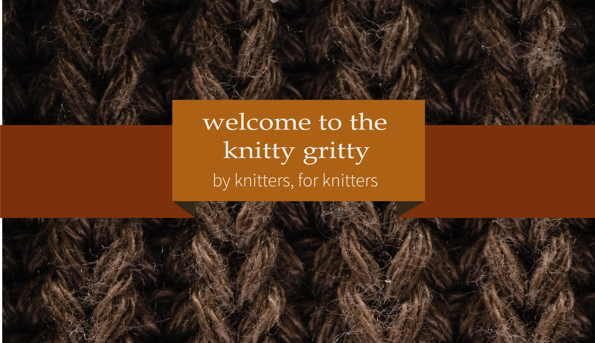

Not every mind or body will experience art the same way. But every mind and body is entitled to the experience
-Ginny Lou Laughlin
So, what is the knitty gritty?
The knitty gritty was made to make knitting feel more approachable and less intimidating. The craft has often felt exclusive and reserved for people who are “in the know,” so our goal is to demystify the art of knitting. And that’s really all knitting is- an art
Why knitting?
A couple reasons to pursue
knitting:
- studies show it’s good for your brain
-part of the slow fashion
movement; good for the
environment/ sustainability
-community